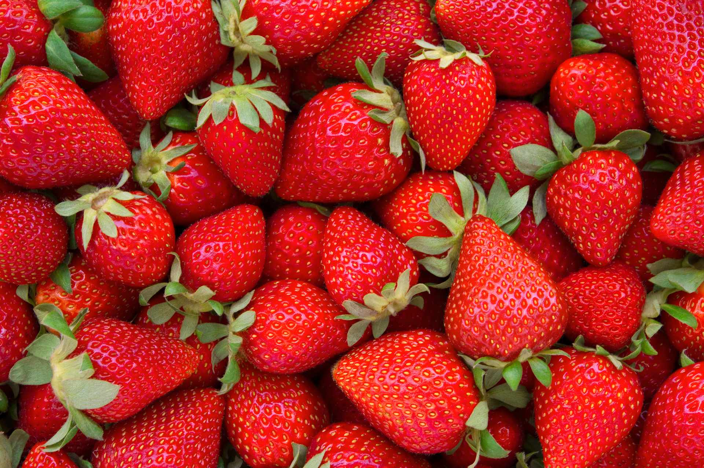
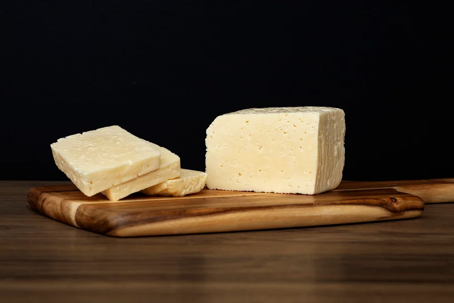

¿Quienes Somos?
En DaverFrut.CR cultivamos más que frutas: cultivamos confianza, frescura y orgullo costarricense. Somos una verdurería comprometida con la calidad, la sostenibilidad y el trato humano. Cada producto que ofrecemos nace de la tierra con dedicación y llega a tu mesa con autenticidad. Creemos en el poder de lo natural, en el sabor que conecta y en la experiencia que emociona. Nuestra misión es compartir contigo lo mejor del campo, con una presentación premium y una historia que se siente en cada bocado.
Conoce másNuestros Productos



El sabor auténtico, la frescura natural y el orgullo de nuestras raíces.
En DaverFrut.CR creemos en el poder de lo natural. Somos una verdurería que conecta el campo con tu mesa, ofreciendo productos frescos, locales y llenos de vida. Nos mueve el orgullo costarricense, la calidad artesanal y el deseo de cultivar experiencias saludables y auténticas todos los días.
Cuidamos la Tierra
Priorizamos al productor local alineado a nuestros valores. Más de 40 pequeños y medianos productores involucrados.
Abonos Organicos
Priorizamos al productor local alineado a nuestros valores. Más de 40 pequeños y medianos productores involucrados.
Nuestra Tienda
Priorizamos al productor local alineado a nuestros valores. Más de 40 pequeños y medianos productores involucrados.
Agricultura Sostenible
Priorizamos al productor local alineado a nuestros valores. Más de 40 pequeños y medianos productores involucrados.